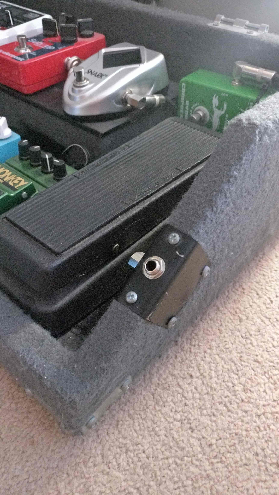
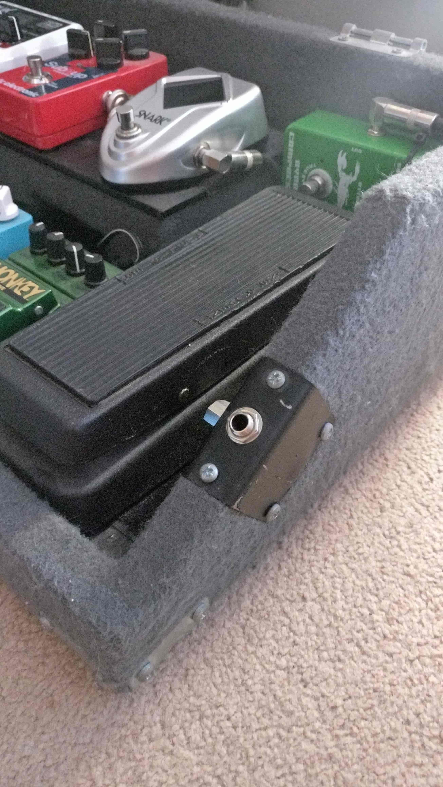

As an electric guitar player, the accumulation of numerous effect pedals is a well-documented symptom of Gear Acquisition Syndrome (GAS). Unfortunately, I am not immune, and thus have acquired a moderate collection of effects pedals ranging from delays, overdrives and reverbs, to tuners and compressors. The issue I faced is whenever I wanted to move my setup to another location, I had to throw all these pedals with me into a bag, along with a range of patch cables and power supplies, only to arrive at the destination and have to re-build the entire setup.
I decided it was time to use a pedal board, a system that I could mount all my pedals to semi-permanently, and route all the cables neatly. When moving my setup to another location, I only have to take the pedal board, plug in a single power cable, my guitar and the amplifier, and I’m ready to play.


I wanted a two-tier design, so that there was somewhere on the board to store the power supplies and excess cables, as well as making the pedals at the back of the board easier to access. I constructed the pedal board out of half-inch thick birch plywood that I found in a skip next to a building sight. The pedal board sections were cut out using a jigsaw, and were fixed together with a combination of wood-glue and screws. The entire assembly was then covered in spray adhesive, before being carefully covered in grey speaker carpet (quite a tricky procedure). The floor however, was covered in sheets of matte black vinyl, with several strips of Velcro for attaching the pedals to. Metal brackets were added to each corner for protection, and rubber feet were added to the bottom. Removable hinges were used so that the lid of the pedal board could be removed entirely when in use.

On the left-hand side of the pedal board, where the elevated section is, a metal panel was added that contains an IEC socket for the mains power input, and a TRS connector for the audio output. On the other side of the pedal board, another TRS connector was added as the guitar input, which was positioned at an angle so that the jack plug would easily pull out if I was to walk too far away from the board with my guitar still attached, preventing damage.
 

Two small latches secure the lid to the base, and a rubber handle lets me carry the entire pedal board like a briefcase (albeit a very heavy one).